← all workarchitecture
Central Green Housing
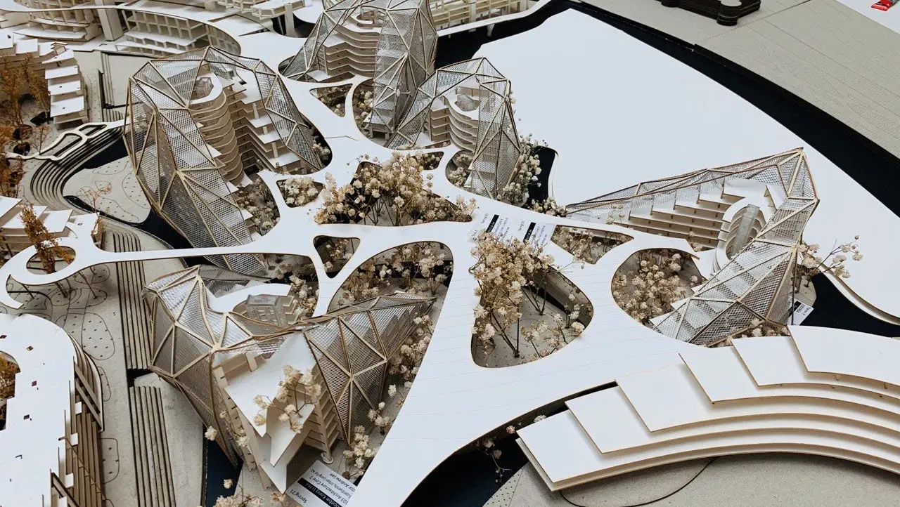
- context
- SUTD Studio
- year
- 2020
- type
- architecture
Central Green is a proposal for a housing project located in the Kallang Basin in Singapore. The Master plan features a main central high line, connecting the main attractions around the area together in a contemplativly serene environment. Located in the heart of the area, Central Green features 5 C shaped blocks facing inward each other to create an enclosed lush forest with curated viewpoints looking at the surrounding attractions, such as the Kallang Stadium and the Basin. The terracing of the levels allows ample light to penetrate the area, and the layout of the housing encourages home businesses to grow and boom by facing the homes towards the main hallway, creating a blend between private and public.
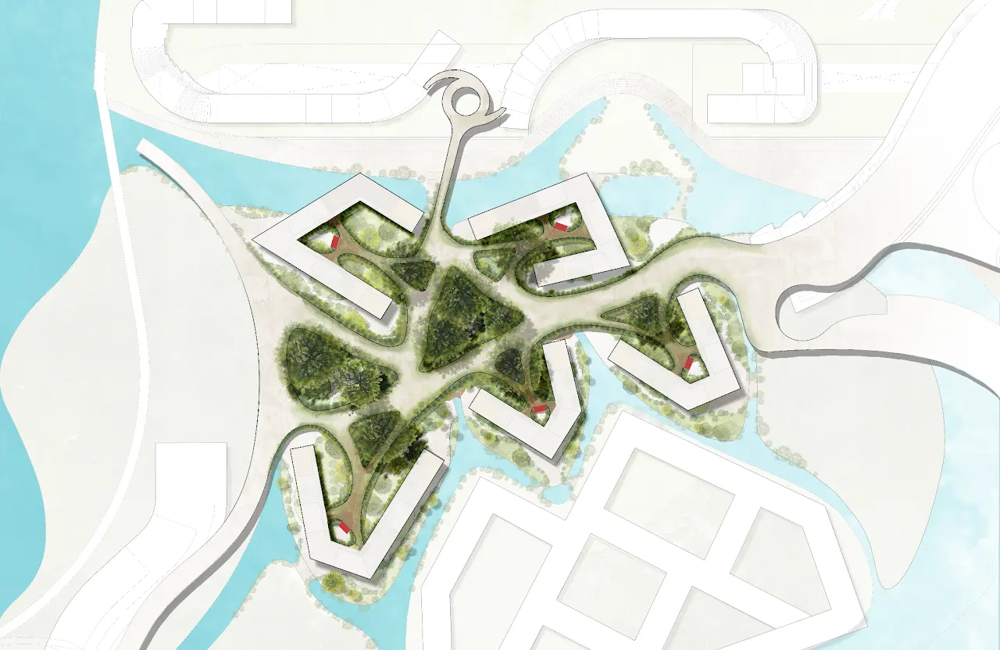


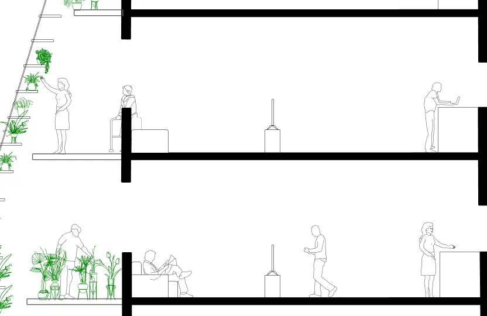
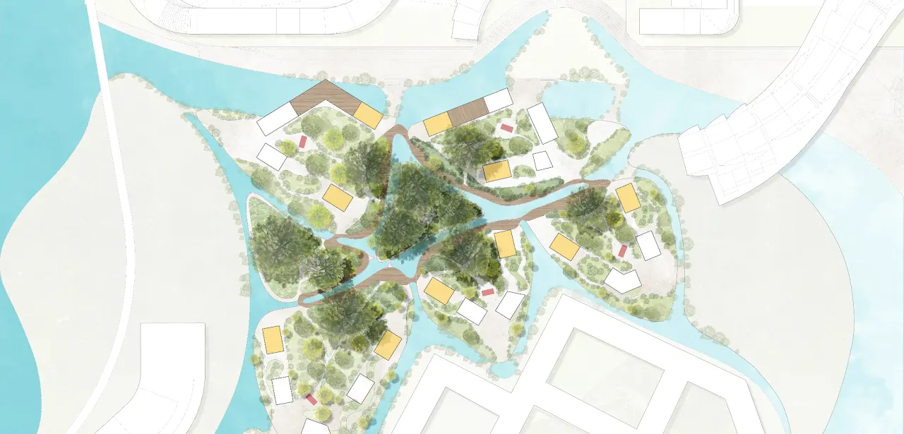
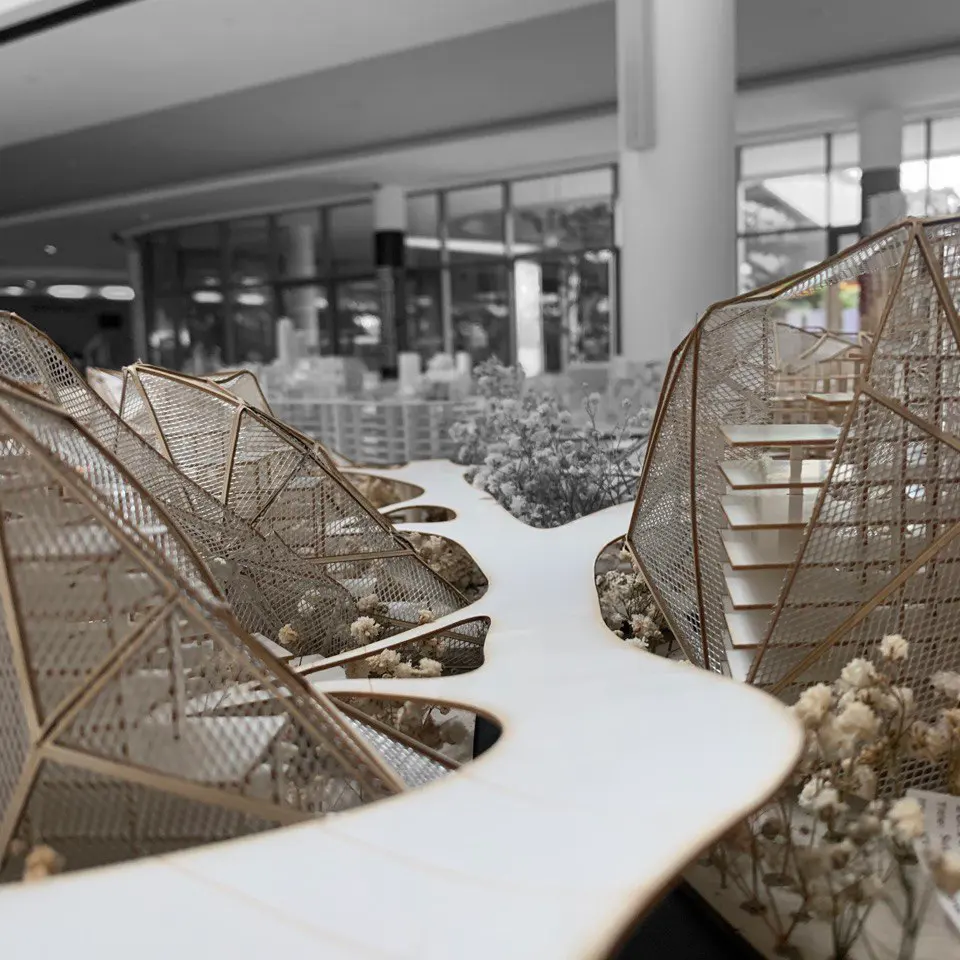
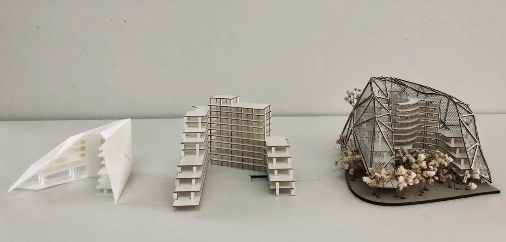
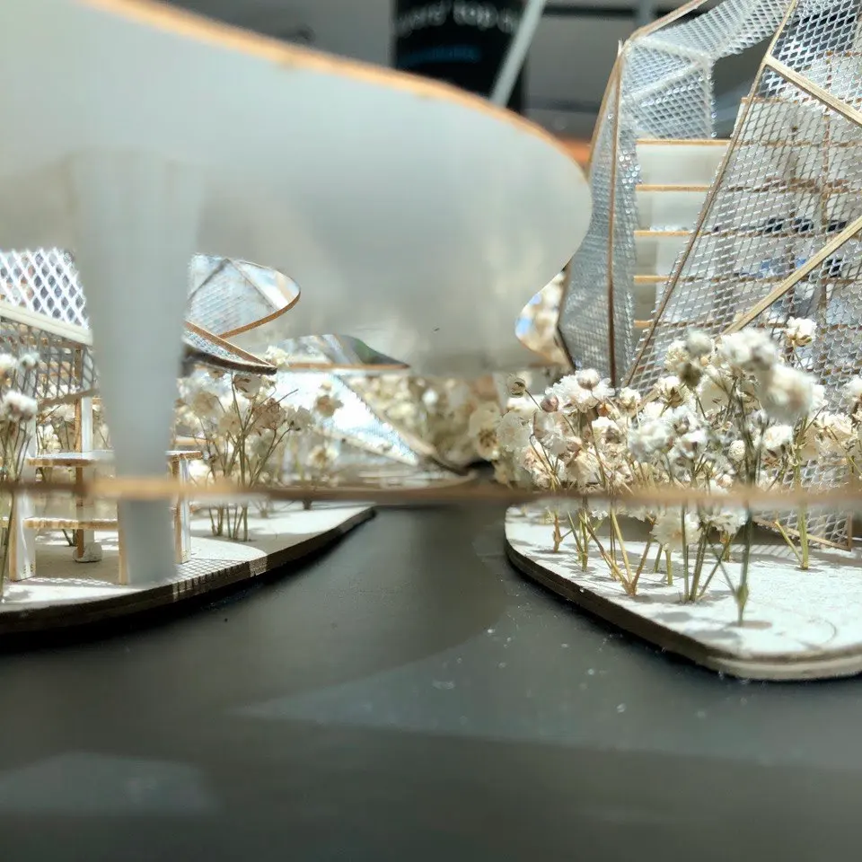
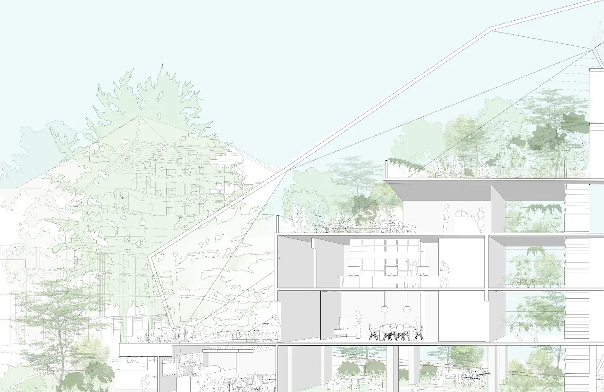
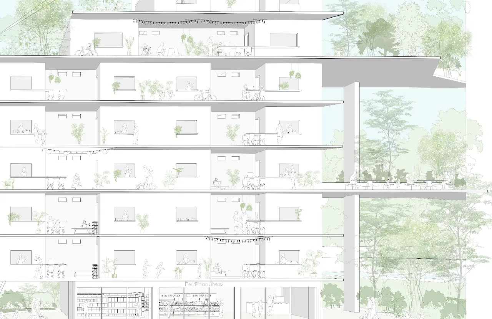
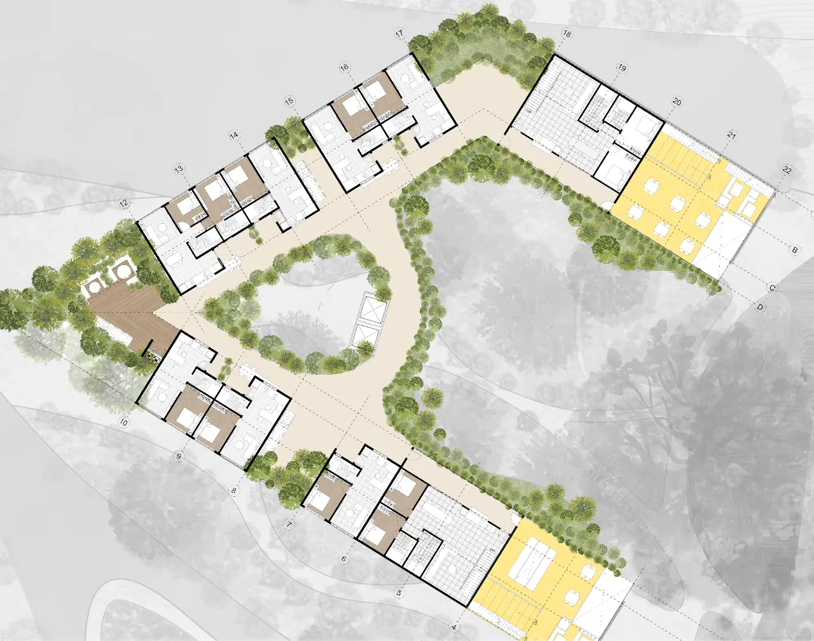
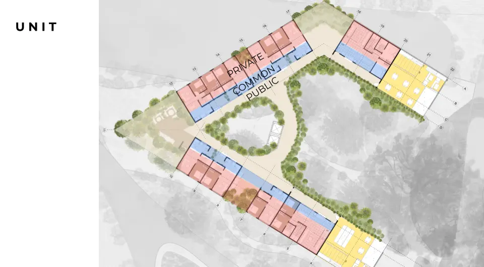